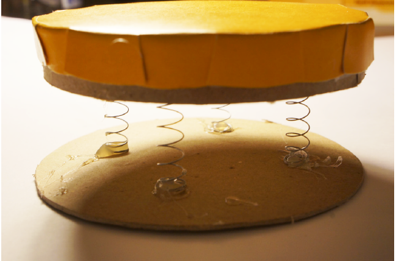
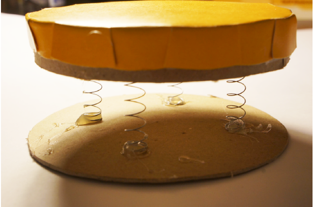
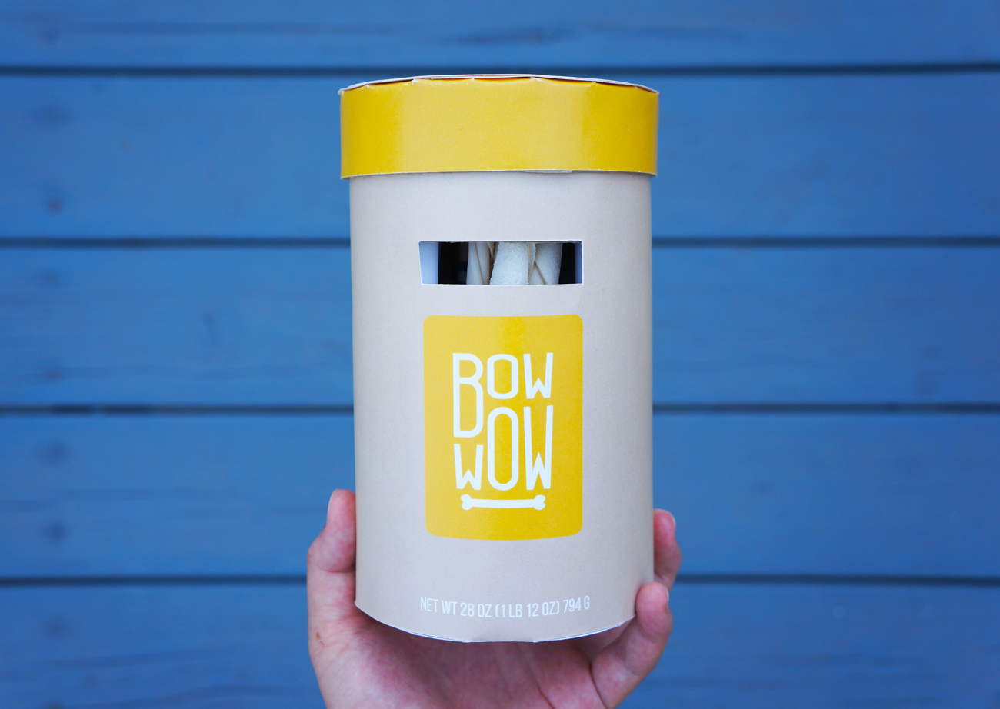

Packaging
I wanted the packaging to represent the company to its fullest. Watching how my dogs moved around my place, I saw how they were very eager to jump at me to express their joy. This movement resembled springs which I decided to incorporate in my design. Before moving on to the final design, I tested out different ways of incorporating the springs using mockups. In the end, the springs were implemented in the design interior to have a subtle, yet surprising, effect.
 

